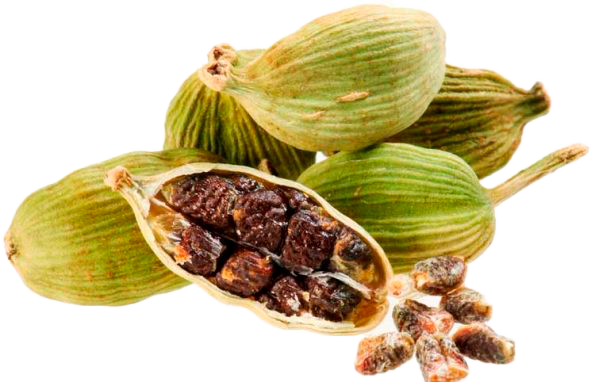
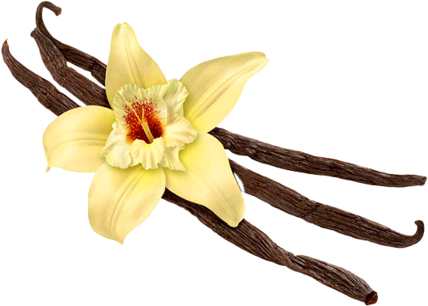
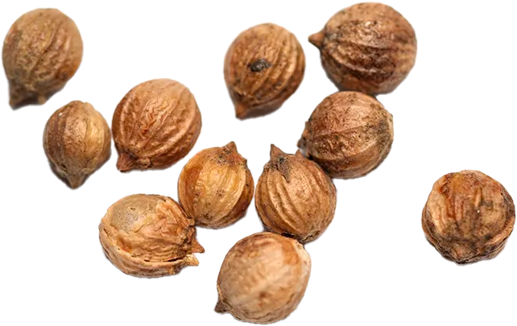
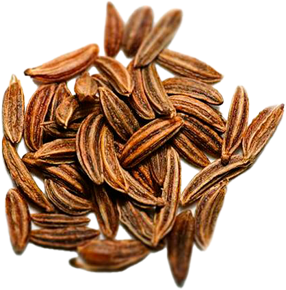
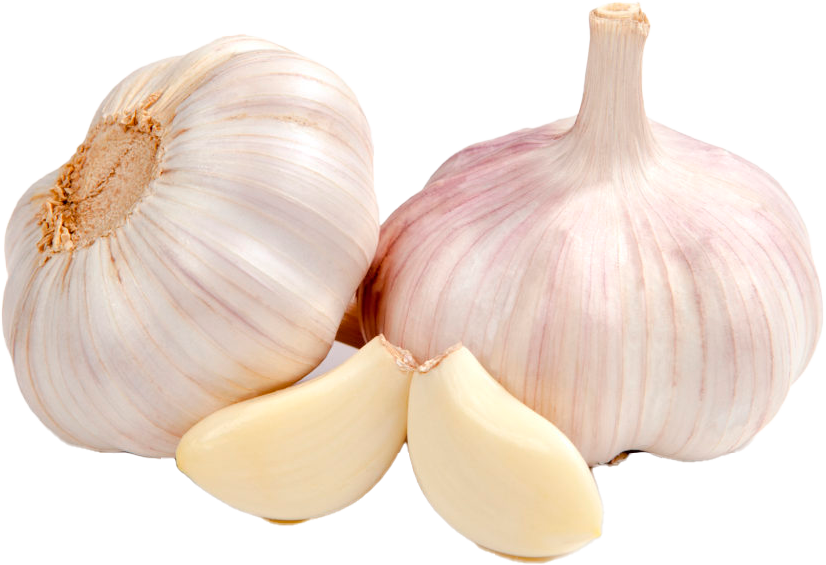

ניתן להכין כל מנה או שתייה טעימים ומעניינים יותר אם מוסיפים תבלינים שונים

קינמון מעניק לקפה ארומה וטעם מיוחדים ומתוקים. ניתן להוסיף אותו גם במהלך הבישול וגם במשקה המוגמר. לתבלין השפעה מחממת ואנטי דלקתית, ולכן זהו תוסף שימושי לטיפול בהצטננות

הל משפיע לטובה על עבודת הלב והבטן, יש לו תכונות מרגיעות, והוא גם קפאין מנטרל. התבלין די ריחני, מעניק למשקה חדות. כדי להוסיף הל לקפה, הוא נטחן, מוזגים כמות זעירה לתוך הטורק כך שהמשקה לא יאבד את שלו טעם טבעי

פלפל שחור -השריפה עונתית משלימה את המשקה הריחני. מספיק שתי אפונה כדי לנקות את הגוף מהצטבר חומרים מזיקים, הוסיפו כוח, סייעו בטיפול במחלות נשימה. חובבי קפה עם פלפל שחור הם אנשים עם אופי חזק וטעם עדין

ונילין -הניחוח המתוק של וניל הופך את הקפה לטעים ועדינים. למשקה, גם תוסף טחון לאבקה וגם בצורה של תרמיל מתאים. קפה עם וניל מרים את מצב הרוח, מרגיע את העצבים, נלחם בהצלחה בהפרעות שינה

ג'ינג'ר -אמנם אבקת ג'ינג'ר נחשבת לתיבול חריף, אך בקפה טעמו בקושי מורגש. הג'ינג'ר עולה חסינות ומסוגלת להתעודד מהר מאוד, להקל על העייפות. יש לזה השפעה גם על זרימת הדם בגוף. כשמבשלים קפה, אסור להוסיף יותר מחצי כפית תבלינים להודו

ציפורן-לציפורן ניחוח ספציפי, כך שקפה עם תבלין זה עדיף על ידי גורמה אמיתית. הטעם של התיבול הוא מריר, לכן עליכם להיזהר עם הפרופורציות בעת הבישול. קפה עם אהבות יועיל לאנשים העוסקים בפעילות נפשית, מכיוון שהוא מגרה את המוח בצורה מושלמת. ציפורן לשפר את תהליכי העיכול ולהגן מפני הצטננות בחורף

מוסקט-קמצוץ תבלין קטן המפוזר על גבי קצף הקפה או שנוסף במהלך הבישול ייתן למשקה טארט, טעם מעיק. אגוז מוסקט שימושי לבריאות הגברים, לתפקוד הלב, לפעילות המוח. קפה זה מכוון בצורה מושלמת כל הגוף

בדיאן-כוכבים ריחניים לא רק יקשטו את המשקה, אלא גם ימלאו אותו בשמנים אתרים. נכס ידוע של כוכב – אניס הוא היכולת לחסל בעיות במחלות גרון, להחזיר קול חסר, לרכך שיעול. קפה עם ניתן להשוות אניס כוכב לתרופה שנוצרה על ידי הטבע עצמו. התבלין שימושי גם למערכת העצבים ועבודת הקיבה

עלה מפרץ-הריח והטעם הידועים של עלה הדפנה משתלב להפליא עם ארומת הקפה. משקה זה מוכן להיפטר של כאבי ראש, לחץ דם גבוה ומצבים דיכאוניים

כוסברה נקרא זרעי כוסברה, אשר יחד עם החלק העשבוני של הצמח הם בעלי ארומה מתמשכת ו סט של תכונות שימושיות. בקפה מתווספים לרוב תבלינים כדי לפתור בעיות עיכול, ויש להם גם מעט השפעה משלשלת. כוסברה עשירה בוויטמינים ויסודות קורט

כמון-משקה הכמון מתגלה כמתובל מאוד, שכן לתבלין יש טעם בהיר. קפה זה ימשוך את אוהבי החדש תחושות. כמון מגביר את התיאבון ומוכיח סוד רב של מיץ קיבה. זה התווית לאנשים הסובלים מגסטריטיס. קפה עם אח מרגיע בצורה מושלמת את מערכת העצבים, בעל תכונות אנטי דלקתיות, מרענן את נשימה
